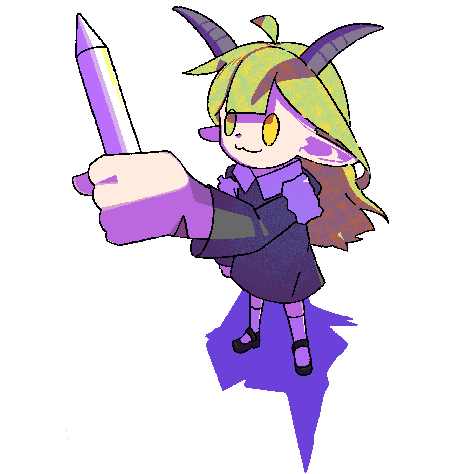
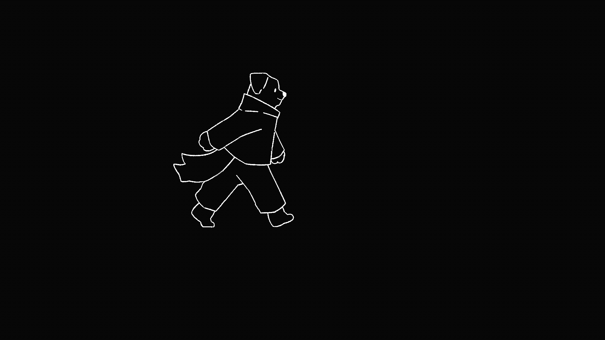
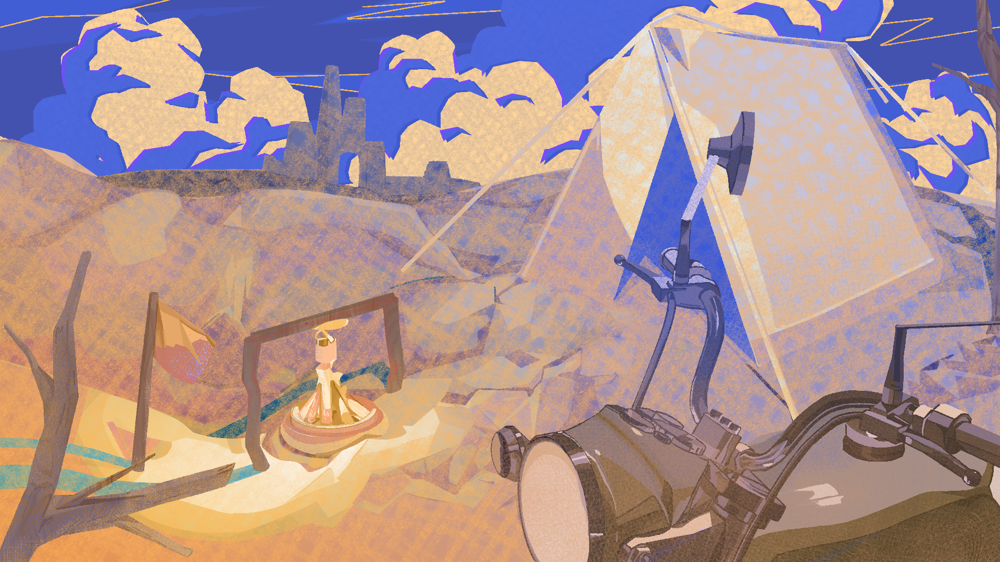
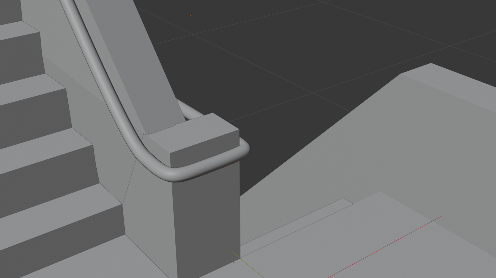
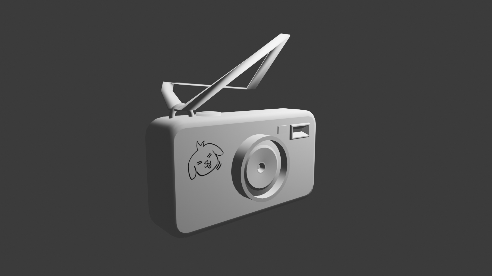
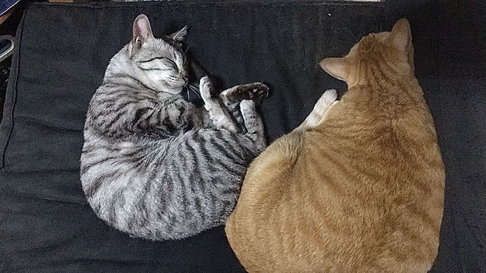

郭鴻益
[TOMO]一位對視覺敘事與動畫創作充滿熱情的多媒體動畫系學生，擅長 2D 動畫製作。喜歡用畫面講故事，熱愛有趣的表現手法；同時樂於團隊合作，將創意轉化為觀眾能真切感受的影像。
// 個人檔案資料庫 CREATOR DOSSIER: KUO HUNG-YI [TOMO]

■ 優勢區間：萬金油特質，擅於堅持，能迅速適應跨領域製程與軟體工具。
■ 製作節奏：完成時間可能較長，但在品質、線條細節與結構準確度上具備高度自我要求。
■ 視覺信念：相信動畫不只是會動的圖，而是會說話的藝術。喜歡用精緻的鏡頭語言、節奏與畫面傳達情緒。
// 技能專長 TECHNICAL PROFICIENCY MATRIX (★ 為熟練度)
美術設計
動畫製作
剪輯與特效
其他技能
// 個人技術能力 THREE CORE DIMENSIONS OF CREATIVE PROCESS
繪製與視覺風格
- 資歷與風格：畫齡自高中至今約 5 年，擅長日系、半厚塗風格。
- 人體與結構：具備基本人體基礎，較能處理一般動態與造型；在透視或寫實上仍有精進空間。
動畫與原畫製作
- 原畫基礎：具備扎實的原畫製作基礎，對動作重心位移、力量傳遞與起伏有豐富實作經驗。
- 動態邏輯：具備中割基礎，能精準判讀時間軌目與律動張數，讓動態流暢呈現。
後期剪輯與音效整合
- 影像剪輯：熟練使用 Premiere Pro 進行全專案時間軸剪輯與鏡頭拼接。
- 音效處理：擅長音畫對位，能運用音效素材庫進行音效剪輯、動態對位與背景音樂編排。
- 動態特效：具備 After Effects 基本特效合成能力，能處理動態圖層與簡單視覺特效。
// 精選作品與專案歷程 SELECTED WORKS ARCHIVE // 專案作品歷程精選
🎬 《VIEW》原畫與中割系列 // 01

《VIEW》原畫與中割系列 // 01
《VIEW》專案原畫動態設計，細緻描繪主角穿梭於微型空間時的步伐節奏、起伏與走位變化。
《VIEW》原畫與中割系列 // 02
關鍵原畫（Genga）動作幅度與節奏設定，著重肢體動作的極限張力與重心轉移的流暢度。
《VIEW》原畫與中割系列 // 03
中割（Douga）補幀繪製，細心梳理動作軌跡弧線與加減速節奏，讓每幀過渡更加平滑自然。
《VIEW》原畫與中割系列 // 04
經典角色 2D 逐幀走路循環，以俐落純粹的線條勾勒步伐起伏，呈現充滿彈性與韻律感的動態節奏。
原創手繪動畫 // 01
手繪動畫動態實驗，探索連續旋轉與視角切換時線條結構的透視變化，展現手繪動態的自由張力。
原創手繪動畫 // 02
手繪動態力學練習，細膩詮釋角色搬運重物時的預備發力、承重下沉與身體重心的協調過渡。
.png)

概念場景完稿 // 01
以 3D 空間透視為骨架，細細刻劃荒漠岩壁的光影層次、營火暖意與重機機械質感，營造充滿故事感的冒險氛圍。
.png)
概念場景完稿 // 02
透過石階拱門引導視覺焦點，運用暮色光影與深沉陰影的對比，捕捉即將踏上未知旅程的沉靜片刻。
.png)
超現實主義角色立繪 //
融合鐘錶指針、相機鏡頭與紳士西服等意象，以大膽鮮明的色彩與筆觸，詮釋時間流動與視覺觀察的哲學隱喻。
.jpg)
Soul Eater // 日系半厚塗
以日系半厚塗筆觸描繪狂放張揚的角色神情與鋼琴琴鍵意象，營造濃烈的情感張力與豐富的視覺層次。
.jpg)
精靈冒險者 // 人體比例與服裝三視圖設定
整理正、側、背完整三視角設定，細緻梳理斗篷剪裁、配件細節與人體比例，為後續動畫與 3D 製作建立清楚基準。

.PNG) 3D + 2D
3D + 2D
3D Blender 輔助透視建模 ➔ 2D 精準建築線稿
面對複雜的樓梯轉折與建築角度時，先在 Blender 搭建 3D 結構輔助透視，再落筆手繪精準的 2D 完稿線條，確保空間結構穩固扎實。

3D 道具模型 //
在 Blender 中雕琢圓潤倒角相機、多層鏡頭結構與肩帶細節，並融入童趣的手繪小狗貼圖，讓科技道具多了份生活溫度。

簡報視覺與封面排版 // 01
結合清晰的資訊階層、幾何引導線條與手繪紋理背景，兼顧閱讀節奏與現代主義版面美感。

簡報視覺與封面排版 // 02
探討《形象的叛逆》符號學哲學，以留白與俐落的文字編排引導視線，呈現概念思考與版面設計的深度結合。

雙貓陪伴//
工作室裡最溫暖的日常風景，兩隻愛貓相依熟睡的模樣，陪伴我度過每一個趕稿與鑽研分鏡的深夜，是最棒的心靈補給。